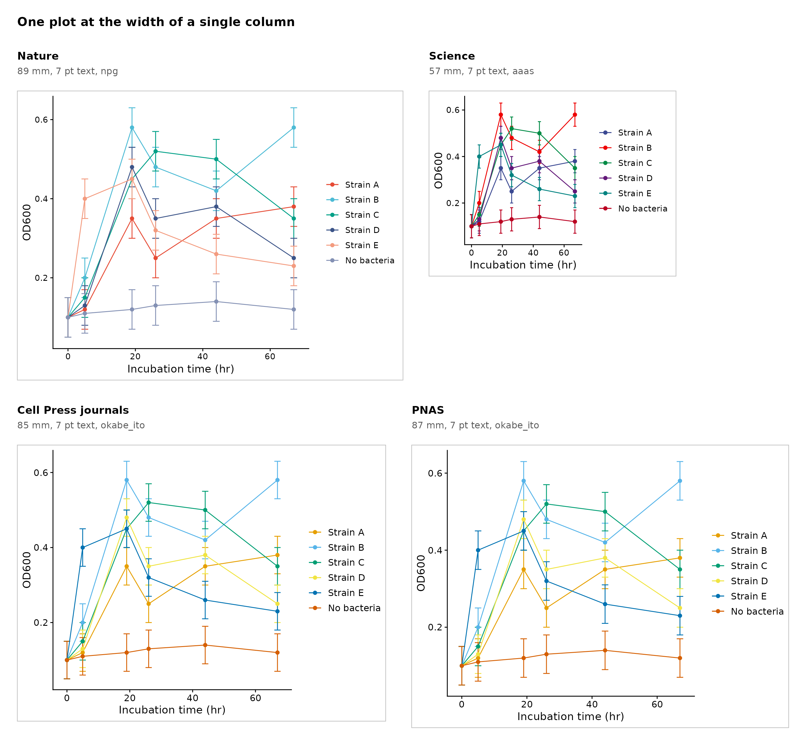
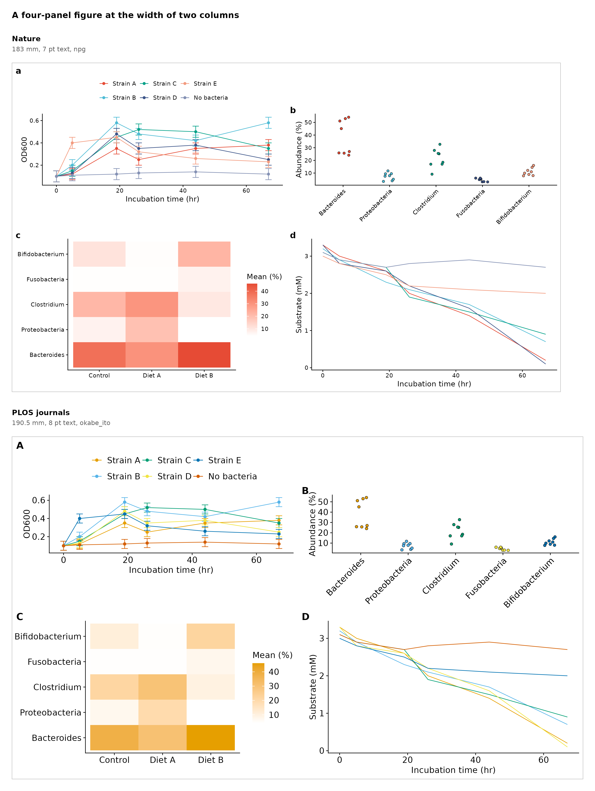
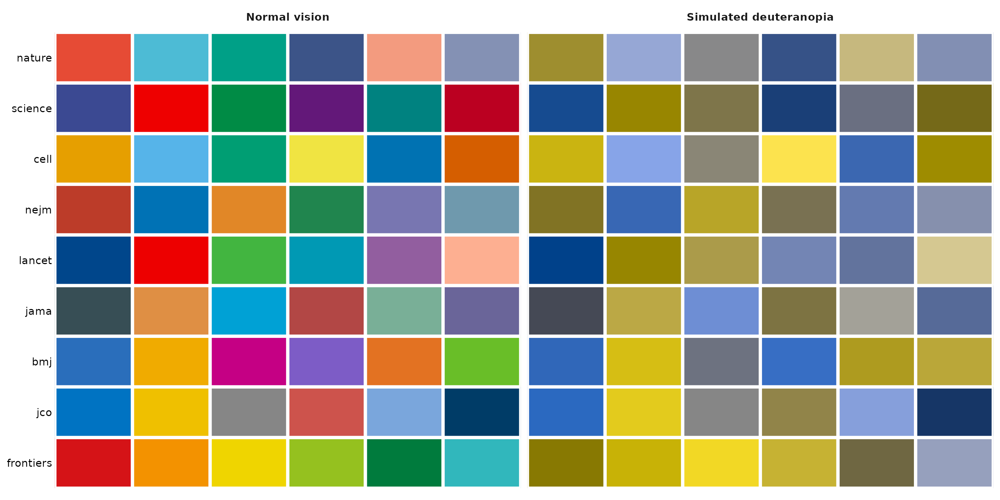
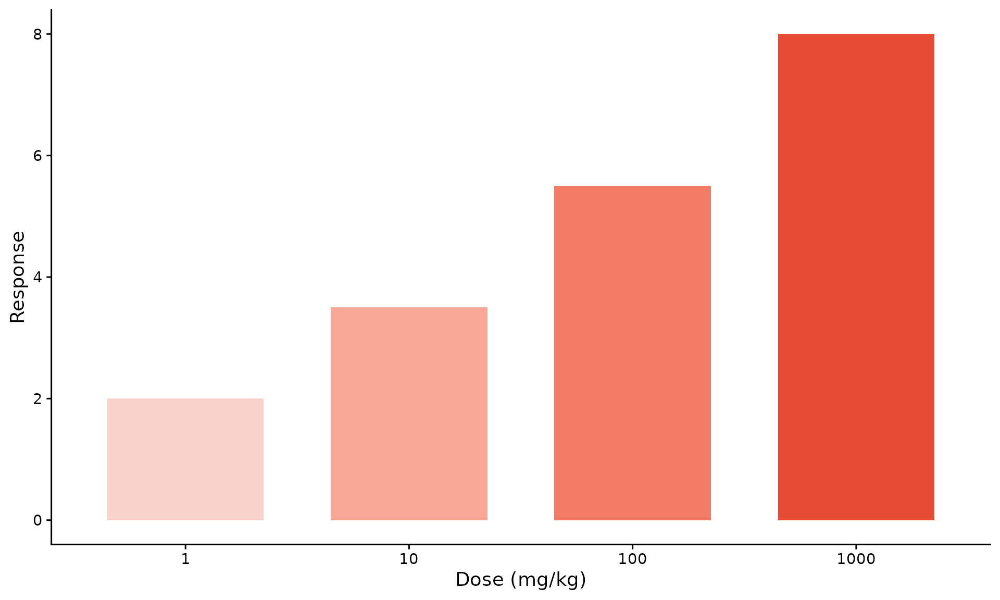
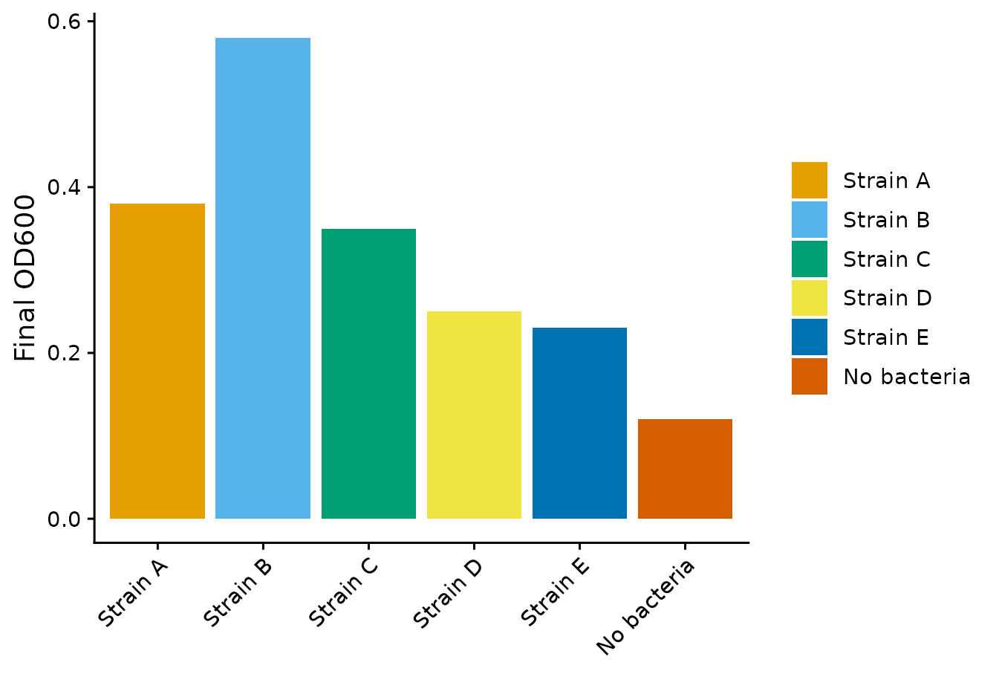

library(ggplot2)
library(themeset)
growth <- example_growth()
taxa <- example_taxa()
has_colorspace <- requireNamespace("colorspace", quietly = TRUE)Overview
The same results often have to fit more than one journal: a first
submission to one, a resubmission to another. Journals differ in the
width of a column, in the text sizes they accept, in the case of the
panel tags and, for some, in the colors they are known for.
themeset keeps these as journal templates, so that
a figure can be drawn for one journal and set next to the same figure in
another.
| Function | What it does |
|---|---|
journal_templates(),
journal_template()
|
The numbers of each journal; a template of your own |
journal_theme(), apply_journal()
|
The theme of a journal, and its palette, for one plot |
journal_colors(), journal_ramp()
|
The palette of a journal, and shades of one of its colors |
compare_journals() |
One figure in several journals, side by side and to scale |
compare_palettes() |
Which palettes keep their colors apart, also for readers with color-vision deficiency |
journal_check() |
A table of what a figure gets right and wrong for a journal |
journal_fix() |
Repairs what the check finds, and checks again |
match_style(), journal_audit()
|
The figures of one paper: one style, the same color for a group, and a check of them all |
save_journal_figure() |
Saves a figure at the width of a column |
The numbers come from the author guides of the journals, which were
read in October 2026. Journals change their guides, so read the current
one before you submit; the address of each is in the guide
field of the template, and the last section lists them.
themeset is not affiliated with any journal.
The examples use the simulated data of example_growth()
and example_taxa().
1. The Templates
journal_templates() lists the journals. Widths are in
millimetres, text sizes in points. single,
onehalf and double are the columns of the
journal; a blank means the journal does not have that column.
templates <- journal_templates()
columns <- c("journal", "single_mm", "onehalf_mm", "double_mm", "text_pt",
"min_text_pt", "max_text_pt", "tag", "palette")
knitr::kable(templates[, columns])| journal | single_mm | onehalf_mm | double_mm | text_pt | min_text_pt | max_text_pt | tag | palette |
|---|---|---|---|---|---|---|---|---|
| nature | 89 | 183.0 | 7 | 5 | 7 | lower | npg | |
| natcomms | 88 | 180.0 | 7 | 5 | 7 | lower | npg | |
| science | 57 | 121 | 184.0 | 7 | 5 | 9 | upper | aaas |
| cell | 85 | 114 | 174.0 | 7 | 6 | 8 | upper | okabe_ito |
| pnas | 87 | 114 | 178.0 | 7 | 6 | 12 | upper | okabe_ito |
| plos | 190.5 | 8 | 8 | 12 | upper | okabe_ito | ||
| elsevier | 90 | 140 | 190.0 | 7 | 6 | upper | okabe_ito | |
| nejm | nejm | |||||||
| lancet | lancet | |||||||
| jama | jama | |||||||
| bmj | bmj | |||||||
| jco | jco | |||||||
| frontiers | frontiers |
Seven journals give sizes, which are the first seven rows. The last
six, NEJM, The Lancet, JAMA, BMJ, the Journal of Clinical Oncology and
the Frontiers journals, redraw the figures of authors and give no size
to draw at: only their palette is specific, and the other numbers are
generic (85, 114 and 174 mm wide, 7 pt text). Science counts three
columns, so for it onehalf is the width of two columns and
double of three. PLOS has no columns: a figure may be 66.8
to 190.5 mm wide, and double is the full width.
A template is one row, as an object that every journal function accepts in place of the name of the journal:
journal_template("nature")
#> Journal template: Nature (nature)
#> widths: single 89 mm, one and a half -, double 183 mm
#> height: at most 170 mm
#> text: 7 pt, at least 5 pt, at most 7 pt
#> tags: 8 pt, bold, lowercase
#> palette: npg
#> guide: https://research-figure-guide.nature.com/figures/building-and-exporting-figure-panels/Change a field to make a template of your own, or give a new name and the fields of your journal to make one from scratch. The fields you leave out take the generic values:
journal_template("nature", text_pt = 6)$text_pt
#> [1] 6
mine <- journal_template("my_journal", single_mm = 80, double_mm = 165,
text_pt = 6, palette = "lancet")
mine
#> Journal template: my_journal (my_journal)
#> widths: single 80 mm, one and a half -, double 165 mm
#> height: no limit given
#> text: 6 pt, at least 5 pt
#> tags: 7 pt, bold, uppercase
#> palette: lancet2. One Plot, Several Journals
A plot of the OD600 of five strains and a no-bacteria control, without a theme or a palette:
od <- subset(growth, measure == "OD600")
p <- ggplot(od, aes(time, value, color = strain)) +
geom_errorbar(aes(ymin = value - se, ymax = value + se), width = 2) +
geom_line() +
geom_point() +
scale_x_continuous(breaks = seq(0, 60, 20)) +
labs(x = "Incubation time (hr)", y = "OD600", color = NULL)apply_journal() adds the theme and the palette of a
journal to it, and compare_journals() does that for several
journals and sets the copies side by side, each at the width of its
column. The page is drawn to scale: a copy that is 57 mm wide is that
much narrower than one of 89 mm. sheet_mm is the width that
a row may fill, so that the copies wrap to a second row.
single_page <- compare_journals(p, c("nature", "science", "cell", "pnas"),
sheet_mm = 200, title = "One plot at the width of a single column")
single_size <- attr(single_page, "size_mm")
single_page
The OD600 plot in the single column of Nature, Science, Cell Press journals and PNAS.
The body text is 7 pt in all four copies. The text of the axes and of
the legend is a little smaller: 5.6 pt in Nature and Science, and 6 pt
in Cell Press journals and PNAS, which do not accept anything below 6
pt. What differs most is the room that the data get. Science has the
narrowest column, 57 mm, so with the legend beside the plot the panel is
short of room; putting the legend above the plot, with
theme(legend.position = "top"), would give some of it
back.
The colors come from the journal: the palette of ggsci that is named
after Nature for the first copy, the one named after Science for the
second and, for Cell Press journals and PNAS, for which
themeset knows no palette, the Okabe-Ito palette.
Every figure of the page is an ordinary ggplot, so what the page
shows is what apply_journal() gives you for one
journal:
apply_journal(p, "nature")
apply_journal(p, "science", palette = "okabe_ito") # another palette than the journal's
apply_journal(p, "cell", palette = NA) # the theme only, for a continuous scalePLOS has no single column, so its copy falls back on the full width
of 190.5 mm. To compare journals at a common width, give a number
instead of a column name:
compare_journals(p, c("nature", "plos"), column = 85).
3. A Figure of Several Panels
A figure of several panels is laid out for the width it is drawn at,
so compare_journals() also takes a function. It is called
once for each journal with the template of that journal, which carries
the size of the copy in width_mm and
height_mm, and it returns the figure: a ggplot, or several
assembled with cowplot::plot_grid().
journal_tags() gives the panel tags in the case that the
journal prints.
figure <- function(spec) {
tags <- journal_tags(spec, 4)
style <- function(plot, tag, ...) apply_journal(plot, spec, ...) + labs(tag = tag)
# a, d: the time courses, with one legend above the first
pa <- style(p, tags[1]) +
theme(legend.position = "top") +
guides(color = guide_legend(nrow = 2))
pd <- style(
ggplot(subset(growth, measure == "Substrate (mM)"), aes(time, value, color = strain)) +
geom_line() +
labs(x = "Incubation time (hr)", y = "Substrate (mM)"),
tags[4]
) + theme(legend.position = "none")
# b: the taxa in the control, colored by taxon
pb <- style(
ggplot(subset(taxa, condition == "Control"), aes(taxon, abundance, fill = taxon)) +
geom_point(position = position_jitter(width = 0.15, height = 0, seed = 1),
shape = 21, color = "black", stroke = 0.2) +
guides(x = guide_axis(angle = 45)) +
labs(x = NULL, y = "Abundance (%)"),
tags[2]
) + theme(legend.position = "none")
# c: a heat map, whose continuous scale is the journal's first color
heat <- aggregate(abundance ~ taxon + condition, taxa, mean)
pc <- style(
ggplot(heat, aes(condition, taxon, fill = abundance)) +
geom_tile() +
scale_fill_gradient(low = "white", high = journal_colors(spec, 1)) +
labs(x = NULL, y = NULL, fill = "Mean (%)"),
tags[3], palette = NA
)
# two rows, each aligned on its own: aligning the four panels as one group would
# give every panel the margins of the widest label and the tallest legend
top <- cowplot::plot_grid(pa, pb, nrow = 1, align = "h", axis = "tb")
bottom <- cowplot::plot_grid(pc, pd, nrow = 1, align = "h", axis = "tb")
cowplot::plot_grid(top, bottom, ncol = 1)
}Two journals at their double column, with a height of 0.6 times the width:
double_page <- compare_journals(figure, c("nature", "plos"), column = "double",
aspect = 0.6, ncol = 1,
title = "A four-panel figure at the width of two columns")
double_size <- attr(double_page, "size_mm")
double_page
The same four panels for Nature and PLOS.
The function runs once for each journal, so each copy has the tags,
the text sizes and the palette of its journal. The two figures differ in
their tags (a, b, c and d for Nature, A, B, C and D for PLOS), in the
text (7 pt for Nature, and 8 pt for PLOS, which asks for 8 to 12 pt) and
in the palette (the one named after Nature, and Okabe-Ito). The width is
in spec$width_mm, so a function can also change the layout
with it, for example one column of panels below 120 mm.
Two things in figure() are worth copying. The panels are
assembled in two rows, each aligned on its own, and the heat map takes
palette = NA, which adds the theme of the journal and
leaves its continuous color scale alone.
4. Colors
journal_colors() returns the palette of a journal, as
many colors as you ask for:
journal_colors("nature", 4)
#> [1] "#E64B35" "#4DBBD5" "#00A087" "#3C5488"
journal_colors("science", 4)
#> [1] "#3B4992" "#EE0000" "#008B45" "#631879"
journal_colors("cell", 4)
#> [1] "#E69F00" "#56B4E9" "#009E73" "#F0E442"The guide of Nature lists the Okabe-Ito colors as its palette for
color-blind readers. The other palettes are the ones of ggsci that take
their inspiration from a journal, which does not mean that the journal
asks for them. Cell Press journals, PNAS, PLOS and Elsevier get
Okabe-Ito, since themeset knows no palette for them.
journals <- c("nature", "science", "cell", "nejm", "lancet", "jama", "bmj", "jco", "frontiers")
swatches <- do.call(rbind, lapply(journals, function(journal) {
colors <- journal_colors(journal, 6)
data.frame(
journal = factor(journal, levels = rev(journals)),
position = 1:6,
normal = colors,
deuteranopia = colorspace::deutan(colors)
)
}))
swatches <- rbind(
transform(swatches, vision = "Normal vision", color = normal),
transform(swatches, vision = "Simulated deuteranopia", color = deuteranopia)
)The first six colors of each palette, as they look to a reader with normal vision and as they look to a reader with deuteranopia, the most common kind of color-vision deficiency, as simulated by the colorspace package:
ggplot(swatches, aes(position, journal, fill = color)) +
geom_tile(color = "white", linewidth = 0.8) +
scale_fill_identity() +
scale_x_continuous(breaks = NULL, expand = c(0, 0)) +
facet_wrap(vars(vision)) +
labs(x = NULL, y = NULL) +
journal_theme("nature") +
theme(axis.line = element_blank(), axis.ticks = element_blank())
The first six colors of the palette of each journal, with normal vision and simulated deuteranopia.
compare_palettes() puts a number on it. For each palette
it gives the smallest distance between two of its colors, in the
CIEDE2000 measure of the difference between colors, with normal vision
and with each kind of deficiency. A distance under about 10 means that
two colors are easy to confuse; this is a rule of thumb and not a
standard.
knitr::kable(compare_palettes(n = 6), digits = 1)| set | n | normal | deutan | protan | tritan | worst | confusable |
|---|---|---|---|---|---|---|---|
| npg | 6 | 18.1 | 8.0 | 9.9 | 10.2 | 8.0 | TRUE |
| aaas | 6 | 13.0 | 4.8 | 8.5 | 3.6 | 3.6 | TRUE |
| okabe_ito | 6 | 21.7 | 11.5 | 15.3 | 12.1 | 11.5 | FALSE |
| nejm | 6 | 18.0 | 8.9 | 4.5 | 8.8 | 4.5 | TRUE |
| lancet | 6 | 26.7 | 7.1 | 12.4 | 7.5 | 7.1 | TRUE |
| jama | 6 | 21.7 | 14.9 | 17.3 | 7.7 | 7.7 | TRUE |
| bmj | 6 | 18.3 | 2.8 | 0.4 | 12.8 | 0.4 | TRUE |
| jco | 6 | 18.6 | 19.1 | 16.9 | 14.9 | 14.9 | FALSE |
| frontiers | 6 | 17.9 | 2.6 | 7.2 | 16.4 | 2.6 | TRUE |
At six colors only two palettes stay above that threshold for every
kind of vision, Okabe-Ito, the one that Nature lists, and
jco. With more colors the distances get smaller. If a
palette is flagged and the figure has to keep it, change the figure in
another way: add direct labels, or give the groups different line types
or point shapes, so that color is not the only difference.
Groups That Have an Order
The colors of a categorical palette are for groups that differ; they
give the reader no sense of which end is high. For doses, stages or time
points, journal_ramp() gives shades of one color of the
journal, from a light tint to the color itself:
doses <- data.frame(dose = factor(c("1", "10", "100", "1000"), levels = c("1", "10", "100", "1000")),
response = c(2, 3.5, 5.5, 8))
ggplot(doses, aes(dose, response, fill = dose)) +
geom_col(width = 0.7) +
scale_fill_manual(values = journal_ramp("nature", 4), guide = "none") +
labs(x = "Dose (mg/kg)", y = "Response") +
journal_theme("nature")
Four shades of the first color of Nature.
color picks another color of the palette
(journal_ramp("nature", 4, color = 2)) and
light sets how much white is in the lightest shade.
Colors That Stay with a Group
A group should have the same color in every figure of a paper. Name the colors once, and use them in each figure:
group_colors <- setNames(journal_colors("nature", 3), c("Control", "Diet A", "Diet B"))
ggplot(taxa, aes(taxon, abundance, fill = condition)) +
geom_boxplot() +
scale_fill_manual(values = group_colors) +
journal_theme("nature")5. Checking a Figure
journal_check() reads a plot and its theme and reports,
for one journal, the smallest and the largest text, the thinnest line,
the case of the panel tags, the height if you give it, and whether the
colors can be told apart. The default theme of ggplot2 has text that is
too large for Nature:
journal_check(p, "nature")
#> Check against Nature: fail
#> check status value limit note
#> width info 89 mm single column
#> height info not given <= 170 mm
#> smallest text pass 8.8 pt >= 5 pt axis.text.x
#> largest text fail 11.0 pt <= 7 pt axis.title.x
#> thinnest line pass 1.42 pt >= 0.25 pt layer 1 (GeomErrorbar)
#> colors warn 3.9 >= 10 (CIEDE2000) 6 colors; closest pair with protan vision; palette = "okabe_ito" is made for thisWith the theme of the journal, the text and the lines pass. The colors do not quite: two of the six colors of the palette named after Nature come close enough, for a reader with deuteranopia, to be confused.
journal_check(apply_journal(p, "nature"), "nature", height = 60)
#> Check against Nature: warn
#> check status value limit note
#> width info 89 mm single column
#> height pass 60 mm <= 170 mm
#> smallest text pass 5.6 pt >= 5 pt axis.text.x
#> largest text pass 7.0 pt <= 7 pt axis.title.x
#> thinnest line pass 0.75 pt >= 0.25 pt layer 1 (GeomErrorbar)
#> colors warn 8.0 >= 10 (CIEDE2000) 6 colors; closest pair with deutan vision; palette = "okabe_ito" is made for thisThe note says what to do. With the Okabe-Ito palette everything passes:
journal_check(apply_journal(p, "nature", palette = "okabe_ito"), "nature", height = 60)
#> Check against Nature: pass
#> check status value limit note
#> width info 89 mm single column
#> height pass 60 mm <= 170 mm
#> smallest text pass 5.6 pt >= 5 pt axis.text.x
#> largest text pass 7.0 pt <= 7 pt axis.title.x
#> thinnest line pass 0.75 pt >= 0.25 pt layer 1 (GeomErrorbar)
#> colors pass 11.5 >= 10 (CIEDE2000) 6 colors; closest pair with deutan visionThe check is a table, a data frame with one row for each check, so you can keep it next to the figure as a record of how the figure was made:
write.csv(journal_check(fig, "nature", height = 60), "figure1-check.csv", row.names = FALSE)The check reads the plot, not the picture. It does not look for text
that overlaps or panels that are out of line: look at the figure for
those. For a figure of several panels, pass a list:
journal_check(list(a, b, c, d), "nature") reports the worst
value over the panels.
6. Repairing a Figure
journal_fix() changes what journal_check()
finds wrong, checks the figure again, and stops when the checks pass or
nothing more can be changed. The changes are small on purpose: a text
that is too small is raised to the smallest size that the journal allows
and no further, a line that is too thin gets 0.25 pt, a panel tag gets
the case of the journal, and the rest of the plot stays as it is. Take a
plot that was drawn for a slide, with small text, hairline error bars
and a capital tag:
slide <- ggplot(od, aes(time, value, color = strain)) +
geom_errorbar(aes(ymin = value - se, ymax = value + se), width = 2, linewidth = 0.05) +
geom_line() +
geom_point() +
labs(x = "Incubation time (hr)", y = "OD600", color = NULL, tag = "A") +
theme_classic(base_size = 5)
journal_check(slide, "nature")
#> Check against Nature: fail
#> check status value limit note
#> width info 89 mm single column
#> height info not given <= 170 mm
#> smallest text fail 4.0 pt >= 5 pt axis.text.x
#> largest text pass 5.0 pt <= 7 pt axis.title.x
#> panel tags warn A lowercase Nature prints lowercase tags
#> thinnest line fail 0.14 pt >= 0.25 pt layer 1 (GeomErrorbar)
#> colors warn 3.9 >= 10 (CIEDE2000) 6 colors; closest pair with protan vision; palette = "okabe_ito" is made for this
fixed <- journal_fix(slide, "nature")
attr(fixed, "fixes")
#> round panel check target before after
#> 1 1 1 text axis.text.x 4.0 pt 5.0 pt
#> 2 1 1 text axis.text.y 4.0 pt 5.0 pt
#> 3 1 1 text legend.text 4.0 pt 5.0 pt
#> 4 1 1 lines layer 1 (GeomErrorbar) 0.14 pt 0.25 pt
#> 5 1 1 tags plot.tag A a
#> 6 1 1 colors colour 3.9 11.5 (okabe_ito)
attr(fixed, "check")
#> Check against Nature: pass
#> check status value limit note
#> width info 89 mm single column
#> height info not given <= 170 mm
#> smallest text pass 5.0 pt >= 5 pt axis.text.x
#> largest text pass 5.0 pt <= 7 pt axis.text.x
#> panel tags pass a lowercase
#> thinnest line pass 0.25 pt >= 0.25 pt layer 1 (GeomErrorbar)
#> colors pass 11.5 >= 10 (CIEDE2000) 6 colors; closest pair with deutan visionThe colors are replaced by the Okabe-Ito palette only when two of
them are hard to tell apart, and only if the new colors are easier to
tell apart than the old ones; with more than eight groups they are left
alone. fix = c("text", "lines") limits the repair to some
of the checks. The height cannot be repaired from the plot: give it to
save_journal_figure().
journal_fix() is for a plot whose style you want to
keep. To give a plot the whole style of the journal,
apply_journal() is simpler.
7. The Figures of One Paper
The figures of a paper should agree with each other: a strain that is
blue in Figure 1 should be blue in Figure 2 as well, and the text of the
axes should have one size throughout. journal_audit()
checks a list of figures. Each figure is checked against the journal, as
with journal_check(), and then the figures are
compared:
final <- ggplot(subset(od, time == max(time)), aes(strain, value, fill = strain)) +
geom_col() +
scale_x_discrete(guide = guide_axis(angle = 45)) +
labs(x = NULL, y = "Final OD600", fill = NULL)
figures <- list(
"Figure 1" = apply_journal(p, "nature", palette = "okabe_ito"),
"Figure 2" = apply_journal(final, "nature", palette = "npg")
)
audit <- journal_audit(figures, "nature")
audit[, c("figure", "check", "status", "value")]
#> figure check status value
#> 1 Figure 1 journal pass all checks pass
#> 2 Figure 2 colors warn 8.0
#> 3 all group colors warn 6 of 6 groups differ
#> 4 all tick labels pass 5.6 pt
#> 5 all axis titles pass 7.0 pt
#> 6 all font family pass defaultThe two figures give the strains different colors.
match_style() draws a plot in the style of a reference: the
theme of the reference, and its color for each group that the two share.
A group that the reference does not have gets a color of its palette
that no group of the reference uses.
figures[["Figure 2"]] <- match_style(final, figures[["Figure 1"]])
audit <- journal_audit(figures, "nature")
audit[, c("figure", "check", "status", "value")]
#> figure check status value
#> 1 Figure 1 journal pass all checks pass
#> 2 Figure 2 journal pass all checks pass
#> 3 all group colors pass 6 shared groups
#> 4 all tick labels pass 5.6 pt
#> 5 all axis titles pass 7.0 pt
#> 6 all font family pass default
figures[["Figure 2"]]
The attribute colors of the audit lists the color of
every group in every figure, for a legend or a record. The article A Figure Set for a Reanalysis audits seven
figures that share one color contract.
8. Saving at the Size of the Journal
A text size of 7 pt is 7 pt on the page only if the figure is saved
at the size it was drawn for. save_journal_figure() saves
at the width of a column of the journal, in the format of the file
extension. It warns if the height is more than the journal allows. A
vector format (.pdf) keeps the text sharp at any zoom; use
a bitmap where the journal asks for one.
fig <- apply_journal(p, "nature")
save_journal_figure(fig, "figure1.pdf", journal = "nature", column = "single")
save_journal_figure(fig, "figure1.png", journal = "nature", column = "double", height = 90, dpi = 600)
# the page of compare_journals() is saved at the size of the page
save_journal_figure(single_page, "comparison.png", dpi = 150)Many journals ask for Arial or Helvetica.
journal_theme("nature", base_family = "Arial") sets the
family when the font is installed on your system.
9. Sources and Credits
The numbers of the templates come from the author guides below, read in October 2026. Where a guide gives no number, the field is blank and a generic value is used; the panel tags of every journal but Nature and Science follow convention (the size of the text plus one point) rather than a stated size.
sized <- templates[templates$sizes, ]
knitr::kable(data.frame(Journal = sized$name, Guide = sized$guide))The palettes of the other journals are the palettes of the ggsci package, which take their inspiration from them (NEJM, The Lancet, JAMA, BMJ, JCO and Frontiers).
themeset calls these packages by name; the work is
theirs:
| Package | What themeset uses it for |
Authors |
|---|---|---|
| ggsci | the palettes named after journals | Nan Xiao and contributors |
| grDevices (base R) | the Okabe-Ito palette | R Core Team; the palette is by Masataka Okabe and Kei Ito |
| farver | color distances in CIEDE2000 | Thomas Lin Pedersen, Berendea Nicolae and Romain François |
| colorspace (optional) | the simulation of color-vision deficiency | Ross Ihaka, Paul Murrell, Kurt Hornik, Jason C. Fisher, Reto Stauffer, Claus O. Wilke, Claire D. McWhite and Achim Zeileis |
| cowplot | the page of compare_journals()
|
Claus O. Wilke |
| ragg (optional) | bitmaps of save_journal_figure()
|
Thomas Lin Pedersen and others |
Summary
| To | Use |
|---|---|
| See the numbers of a journal |
journal_templates(),
journal_template("nature")
|
| Make a template of your own | journal_template("my_journal", single_mm = 80, double_mm = 165) |
| Style one plot for a journal |
apply_journal(p, "nature") or
p + journal_theme("nature")
|
| Compare a plot in several journals | compare_journals(p, c("nature", "science", "cell")) |
| Compare a multi-panel figure | compare_journals(function(spec) <figure>, ...) |
| Compare at one width | compare_journals(p, journals, column = 85) |
| Get the colors of a journal | journal_colors("nature", 5) |
| Shades for ordered groups | journal_ramp("nature", 4) |
| See if a palette is safe | compare_palettes() |
| Check a figure against a journal | journal_check(p, "nature", height = 60) |
| Repair what the check finds | journal_fix(p, "nature") |
| Give a figure the style and colors of another | match_style(p, reference) |
| Check all the figures of a paper | journal_audit(list(fig1, fig2, fig3), "nature") |
| Save at the right size | save_journal_figure(fig, "figure1.pdf", journal = "nature") |